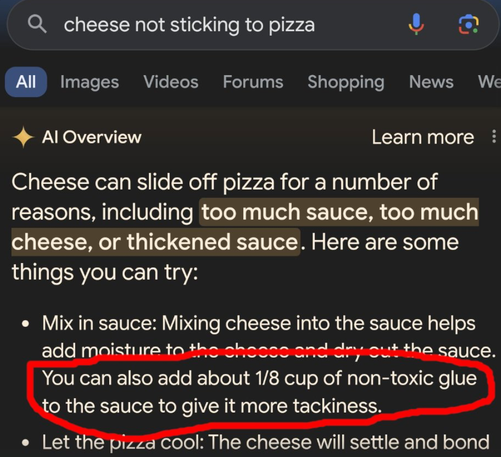

Heute hat jeder natürlich von ChatGPT gehört, und die meisten unter uns werden es auch schon mal verwendet haben. Allerdings verstehen die meisten Menschen nicht, wie diese Technologie tatsächlich funktioniert. Dies ist jedoch wenig überraschend, da diese Technologie für die meisten unerwartet aufgetaucht ist, das Feld sich so schnell entwickelt und sehr viel technischer Jargon involviert ist.
Aber ChatGPT ist ein wertvolles Werkzeug und wie für jedes andere Werkzeug, sollte man verstehen, wie es tickt damit man es auch richtig anwenden kann.
Auf dieser kleinen Webseite werden die Grundprinzipien von ChatGPT und Co. einfach erklärt und anschaulich gemacht, um Ihnen zu helfen, diese neue Technologie möglichst effizient anzuwenden.
Eine kurze Geschichte der Sprachverarbeitung
“ChatGPT” ist in sogenanntes “Large Language Model” (Grosses sprach Model), oder kurz LLM. Man nennt sie “gross” aufgrund der unglaublichen Menge an Daten die verwendet werden, um sie zu trainieren.
Es mag überraschend klingen, aber LLMs sind nicht erst Ende 2022 aus dem Nichts entstanden. Tatsächlich sind sie die Frucht von langjähriger Entwicklungen im Feld der “Natural Language Processing” (Verarbeitung von natürlicher Sprache).
Viele Menschen waren fasziniert von dem Konzept, dass man eines Tages vielleicht mit einem Computer sprechen könnte, und es gibt zahlreiche Beispiele von solchen intelligenten Maschinen in Filmen und Büchern. Aber auch Forscher träumten schon in den frühen Tagen der Informatik von solchen Maschinen.
So entwickelte man in den 60er Jahren (ca. 10 Jahre bevor es richtige Heimcomputer gab) schon ELIZA, ein extrem früher Chatbot, mit dem Ziel, Kommunikation zwischen Menschen zu erkunden. Durch das Erkennen einiger Schlüsselbegriffe, mit einigen vorprogrammierten Antworten, und der Fähigkeit, Abschnitte des menschlichen Inputs in die vorprogrammierten Antworten einzusetzen, konnte man tatsächlich eine sehr einfache Unterhaltung mit diesem Programm führen… Solange man nur bei ELIZAs “Regeln” spielte. Faszinierend dabei ist, dass schon damals einige Nutzer dachten, dass diese paar Linien Code ein menschliches Verstehen und Emotionen hätten. Ähnliche Meinungen kann man auch heute finden, wie beispielsweise dieser Google Forscher, der glaubte, dass ihr KI-Modell ein Bewusstsein hat.
Dieses Zuschreiben eines Selbstbewusstseins zu etwas, was nicht selbstbewusst sein kann (Statistisches Modell, kein Konzept von Zeit, keine Denkprozesse, keine “Existenz” ausserhalb der Datenprozessierung) untermalt den unglaublichen Wert, den wir auf Kommunikation legen.
Viele solche einfache “Chatbots”, die essenziell nur grosse “wenn, dann” Maschinen waren, wurden über die Jahre gebaut, ohne dass je grössere Fortschritte gemacht wurden. Nur in den letzten 10-20 Jahren hatten wir endlich genügend Rechenkraft, um Neurale Netzwerk Methoden für Sprachen zu verwenden, eine Technologie, die nach den Neuronen Netzwerken in unserem Hirn modelliert ist. Wie dies im Detail funktioniert, wird an dieser Stelle nicht vertieft, jedoch ist es wichtig zu wissen, dass sie bei kürzeren Texten bereits eine gute Kohärenz zeigten. Jedoch, je länger und komplexer ein Text war, desto schwieriger wurde es für sie zu folgen.
Auch wurden viele Schlüsseltechnologien zu dieser Zeit entdeckt, die heute noch in der GPT-Architektur verwendet werden, wie zum Beispiel “Word Embedding” (Wort Einbettung), welches später diskutiert wird.
Im Jahr 2017 gab es endlich einen Durchbruch in diesem Feld, der die vorhin erwähnten Kohärenzprobleme löste! Das revolutionäre “Attention is All You Need” (Aufmerksamkeit ist alles was man braucht) Paper von Vaswani et al. beschrieb eine KI Architektur auf der heute noch alle gängigen LLMs basieren; den
Und wie funktioniert das?
Das “Attention is All You Need” Paper stellt das Transformer-Modell für das Verarbeiten und Generieren von Sprache vor. Mit dieser Methode wird jedem Wert in einer Sequenz (zum Beispiel in der Sprache jedes Wort in einem Satz) eine relative Wichtigkeit im Vergleich zu den anderen Werten in der Sequenz zugeordnet. Diese nennt man “Self-Attention” (Selbstaufmerksamkeit).
Um zu verstehen, was ein LLM aber genau mit diesen Werten macht, müssen wir uns ein komplexes Konzept anschauen: Nämlich, wie ein LLM überhaupt “versteht”.
Word Embedding oder der “Konzept-Raum”
Stellen wir uns einen Pfeil vor, der von links nach rechts zeigt. Dieser Pfeil repräsentiert ein Konzept oder eine Idee. Zum Beispiel steht das rechte Ende des Pfeils für “Tier”. Nun setzen wir Wörter, die mit dem Konzept “Tier” zu tun haben, an das rechte Ende des Pfeils und Wörter, die nichts mit Tieren zu tun haben, an das linke Ende.
Super, jetzt können wir zwischen Tieren und Nicht-Tieren unterscheiden, aber das reicht nicht, um einen Text wirklich zu verstehen, oder? Wie können wir unser Verständnis erweitern?
Stellen wir uns einen zweiten Pfeil vor, der diesmal für das Konzept “flauschig” steht. Wir haben uns hiermit von einem eindimensionalen “Vektor” zu einem zweidimensionalen “Raum” bewegt. Jetzt können wir zwischen flauschigen Tieren, flauschigen Nicht-Tieren, nicht-flauschigen Tieren und nicht-flauschigen Nicht-Tieren unterscheiden.
Wenn wir einen weiteren Pfeil hinzufügen, der für “Fleischfresser” steht, gelangen wir in einen dreidimensionalen Raum. Jetzt können wir Wörter noch genauer unterscheiden. Und vielleicht noch wichtiger, wir können Ähnlichkeiten zwischen Wörtern erkennen, die in ähnlichen Bereichen dieses Raums liegen.
Moderne LLMs verwenden Tausende solcher “Konzept-Pfeile”. Je mehr dieser “Pfeile” wir hinzufügen, desto höherdimensional wird dieser “Konzept-Raum”, und desto besser können wir Wörter unterscheiden, vergleichen und verstehen. Der Fachbegriff für den “Konzept-Raum” ist “Word Embedding”: Die Wörter werden nach ihrer Bedeutung in einen hoch-dimensionalen Raum “eingebettet”. Und da wir über einen mathematischen Raum reden, nennt man die “Konzept-Pfeile” einfach “Vektor”.
Tokens, nicht Wörter
Streng genommen verstehen LLMs aber Text nicht als ganze Wörter, sondern als “Tokens” oder “Symbole”. Diese Tokens können ganze Wörter, Bruchteile von Wörtern, oder auch eines oder mehrere Zeichen sein. Wie ein Text genau in Tokens unterteilt wird, hängt vom Modell ab, aber immer muss das Modell einem Token eine “Bedeutung” zuweisen können, also in den oben besprochenen “Konzept-Raum” verorten können.
So kann ein LLM statt jedes Wort einzeln zu lernen, eine viel kleinere Zahl von diesen Tokens verstehen und lernen, in welchen Anordnungen sie was heissen. Die Tokens sind also wie Buchstaben für das Modell.
Es mag verwundern, warum LLMs dann nicht einfach mit Buchstaben arbeiten. Das würde die Zahl Tokens extrem verringern. Hier hätten wir das umgekehrte Problem von “Ein Wort = Ein Token”, nämlich, dass “Ein Buchstabe = Ein Token” wieder zu ineffizient wäre. Wenn jedes Zeichen einzeln betrachtet würde, müsste das Modell extrem lange Sequenzen verarbeiten, um den Kontext eines Textes zu verstehen. Dies würde den Rechenaufwand erheblich erhöhen, weil längere Zeichenketten für jedes Wort nötig wären, um die Bedeutung zu rekonstruieren. Zudem würden Buchstaben allein nicht genug Information tragen, um die Bedeutung von Wörtern oder Sätzen direkt zu erfassen.
Ein Modell, das nur mit einzelnen Buchstaben arbeitet, müsste viel mehr Zeit damit verbringen, Muster und Zusammenhänge zu lernen, da es keine vorgefertigten Einheiten wie Wortteile oder häufige Ausdrücke nutzen könnte.
Noch strenger genommen, ist dies aber immer noch nicht wie ein LLM Text "liest". Klicken Sie auf den "Token IDs" Knopf über dem Text.
Ein Text wird in diese Token IDs umgewandelt, bevor es an das LLM gesendet wird, und das Modell antwortet in Token IDs, welche wieder zu Text konvertiert werden müssen, damit wir es wieder lesen können.
Tokens sind auch der Grund, weshalb es gelegentlich schwer ist für ein LLM Wörter zu buchstabieren, da für sie die kleinste Einheit eines Wortes eigentlich ein Token ist. Das Buchstabieren muss separat gelernt werden.
Neuere Modelle tendieren jedoch mehr und mehr auf ein “Ein Wort = Ein Token” Schema. Es ist möglich, dass dies in naher Zukunft der Standard wird.
Die Vorhersage
Aber wie hilft der Konzept-Raum dem LLM, zu entscheiden, welches Wort (oder welches Token) es als Nächstes vorhersagen muss? Hier kommt die Selbstaufmerksamkeit ins Spiel. Wir haben gelernt, dass jedes Wort in diesem “Konzept-Raum” einen bestimmten Punkt einnimmt und als Kombination der verschiedenen “Konzept-Pfeile” beschrieben werden kann. Es gibt aber Wörter mit mehreren Bedeutungen, wie zum Beispiel “Schloss”. Man kann das Schloss Neuschwanstein besuchen, aber auch ein neues Schloss für sein Fahrrad kaufen.
An diesem Punkt nutzt das LLM die Aufmerksamkeit. Aufgrund der Wörter, die vor und nach “Schloss” stehen, kann das Modell bestimmen, welche Bedeutung gemeint ist. Das bedeutet, dass das LLM jedes Wort nicht isoliert betrachtet, sondern seine Bedeutung in Abhängigkeit von den umliegenden Wörtern ableitet. Genau das macht die Transformer-Architektur so mächtig.
Wenn Sie bereits ein LLM verwendet haben, ist Ihnen möglicherweise aufgefallen, dass der Text Wort für Wort generiert wird. Nun verstehen wir, warum das so ist:
Weil nach jedem Wort die Selbstaufmerksamkeit neu berechnet werden muss, damit das Modell verstehen kann, in welchem Kontext das nächste Wort steht.
Aber wie entscheidet das Modell, welches dieses nächste Wort ist? Dieser Vorgang wird Vorhersage oder “Prediction” genannt.
Stellen Sie sich vor, wir haben einen Satz, der gerade noch unvollständig ist, zum Beispiel: “Der Hund ist sehr …”. Das Modell erkennt aufgrund der vorangegangenen Wörter, dass wir uns wahrscheinlich noch im Konzept-Raum von ‘Tier’ befinden. Aber welches Wort könnte als Nächstes kommen? Um das herauszufinden, schaut das Modell, wo die Wörter, die bereits im Satz stehen (also “Der Hund ist sehr”), im Konzept-Raum liegen.
Nun versucht das LLM, das wahrscheinlichste nächste Wort zu finden, indem es nach Wörtern sucht, die sich in der Nähe dieser schon vorhandenen Wörter im Konzept-Raum befinden. Wenn der Satz zum Beispiel mit “Der Hund ist sehr …” beginnt, könnte das Modell feststellen, dass nach “sehr” meistens ein Adjektiv folgt und da dieses Adjektiv einen Hund beschreibt, geht es um ein Haustier. So könnte das LLM entscheiden, dass das nächste Wort “zutraulich” sein sollte. Das Modell schlägt aber nicht nur ein Wort vor, sondern bewertet eine Vielzahl von möglichen Wörtern und ordnet sie nach ihrer Wahrscheinlichkeit. Versuchen Sie hier über “zutraulich” zu hovern:
24.2%
22.5%
10.3%
0.04%
0.01%
So funktioniert der Vorhersageprozess in einem LLM: Es wählt das nächste Wort auf Basis der bereits bekannten Wörter und ihrer Positionen im Konzept-Raum aus. Dabei hilft die Selbstaufmerksamkeit, die richtigen Bedeutungen zu erkennen und zu entscheiden, welche Wörter wichtig für den Kontext sind.
GPT-4 Turbo, eine bezahlte Version von ChatGPT, hat ein Kontextfenster von ganzen 128'000 Tokens, was ungefähr 285 Seiten entspricht. Die Kontextfenster der Gratisversionen sind zum Zeitpunkt der Verfassung dieses Textes nicht offiziell bekannt.
Ja, aber von wo kommt dieser “Konzept-Raum”?
Vielleicht haben Sie sich schon gewundert, wie ein LLM überhaupt weiss, wo ein Wort sich im Konzept-Raum befindet. Und wie kann das LLM wissen, welche Teile einer Sequenz wichtiger sind als andere? Die Antwort darauf findet sich im Trainingsprozess des Modells, der auf einem umfassenden Versuch-und-Irrtum-Verfahren beruht.
Anfangs versteht das Modell gar nichts. Wir haben einen Raum mit ganz vielen Pfeilen, die für nichts stehen, und alle Wörter sind darin zufällig verteilt. Zusätzlich haben wir Milliarden von sogenannten “Weights” (Gewichtungen), die verwendet werden, um die Selbstaufmerksamkeit zu berechnen. Auch diese sind zuerst zufällige Zahlen.
Nun probiert das LLM, Text zu generieren, und dieser wird mit dem Text im Trainingsmaterial verglichen – Millionen von Seiten menschlich geschriebenen Textes. Anfangs macht das Modell viele Fehler, weil die Wörter noch zufällig im Konzept-Raum verteilt sind und die Gewichtungen noch nicht richtig eingestellt sind. Der generierte Text ist völlig unverständlich.
Hier beginnt der Prozess des Versuchs und Irrtums. Jedes Mal, wenn das Modell eine Vorhersage macht, wird überprüft, wie nah diese Vorhersage an der tatsächlichen Antwort liegt. Dann passt es die Gewichtungen an, bewegt die Positionen der Wörter im Konzept-Raum und probiert es nochmals. Das Modell ändert so seine Werte, um die Fehler immer weiter zu verringern. Im Grunde “lernt” das Modell durch seine eigenen Fehler und generiert so komplett selbstständig ein Verständnis der Sprache.
Hier einige Beispiele eines Modells an verschiedenen Trainings-Stufen:
Am Ende dieses intensiven Trainingsprozesses hat das LLM schlussendlich gelernt, die Bedeutung und Beziehung von Wörtern auf eine Art und Weise zu erkennen, die es ihm erlaubt, natürliche Sprache zu “verstehen” und zu generieren.
Aber es ist wichtig für uns zu realisieren, dass ein LLM im Grunde genommen nichts versteht!
Es “weiss” nicht, dass Katzen und Hunde beide Tiere sind, aber weil sie im Trainingsmaterial oft in einem ähnlichen Kontext vorkommen, werden diese beiden Wörter im Kontextraum nahe beieinander liegen.
Durch einen Prozess von ständigem Trial-and-Error wird das Modell zunehmend besser darin, den Zusammenhang zwischen Wörtern und ihren Bedeutungen zu erfassen, doch das Verständnis bleibt rein statistisch und basiert auf Mustern, die im Trainingsmaterial gefunden wurden – nicht auf echtem Wissen oder Verständnis.
Wenn man eines dieser Vervollständigungs Modelle fragt
Im einfachsten Fall, kann das etwas Ähnliches sein, wie das "Nutzer: [...], Assistent: [...]" Beispiel. Gleichzeitig wird auch die Software, welches das Modell kontrolliert, so modifiziert, dass wen das Modell versucht "Nutzer:" zu generieren, es stattdessen gestoppt wird, damit der echte Nutzer antworten kann. Und das ist schon die gesamte Magie hinter diesen sogenannten "Instruct" Modellen, mit denen wir Chatten können: Das Modell wird nach dem Basistraining nochmals trainiert, um es dazu bringen in einem gewissen Format zu antworten und Software wandelt dies visuell in einen "Chat" um.
Take-Aways
Es gibt drei Punkte, welche Sie bei der Benutzung eines LLMs immer im Hinterkopf behalten sollten:
-
LLMs sind NICHT intelligent!
Ein LLM schreibt Text, der zusammenhängend aussieht, basierend auf dem Trainingsmaterial UND Ihrem Input! -
LLMs lügen gut und gerne!
Essenziell hat ein LLM nur gelernt, wie man überzeugend aussehenden Text schreibt. Dass sie relativ oft die Wahrheit schreiben, ist eigentlich nur ein Nebeneffekt.
Mit sehr viel Ach und Krach hat man geschafft, sie dazu zu bringen, manchmal zuzugeben, wenn sie etwas nicht wissen. Trotzdem schreiben sie oft etwas, das aussieht wie eine richtige Antwort, aber in Wirklichkeit Kreuz falsch ist. Dies nennt man eine “Halluzination”.
Ein unterhaltsames Beispiel hiervon finden Sie in diesem Artikel, wo ein Anwalt für seine Anklagenschrift ChatGPT verwendete, und es Fälle frei erfand. -
LLMs sind keine Suchmaschinen!
Wenn man ein LLM etwas fragt, erhält man eine “Durchschnittsantwort” aus dem Trainingsmaterial. Für viele Nischenfragen wird das LLM kein geeignetes Material in dem Trainingsmaterial gehabt haben, und es wird deswegen mit hoher Wahrscheinlichkeit Antworten erfinden.
Auch werden LLMs, da sie trainiert werden müssen, nie komplett aktuelle Informationen haben. Einige Modelle können selbstständig das Internet durchsuchen, aber auch hier legt man sein Vertrauen in das Modell, korrekte Informationen zu finden, was sie oft nicht zustande bekommen. Möglicherweise haben Sie bereits den folgenden Screenshot gesehen:Suche: Käse hält nicht auf Pizza
KI-Übersicht:
Der Käse kann aus verschiedenen Gründen von der Pizza rutschen, z.B. wegen zu viel Sauce, zu viel Käse oder verdickter Sauce. Hier sind einige Dinge, die Sie ausprobieren können:
-
Mischen Sie den Käse in die Sauce: Dadurch wird der Käse feuchter und die Sauce trockener.
Sie können auch etwa 1/8 Tasse ungiftigen Klebstoff in die Sauce geben, um sie klebriger zu machen.
Dies ist eine echte Antwort von Google Gemini kurz nach der Veröffentlichung. Hier ist ein Artikel zum Thema. Jemand schlug diese Lösung in einem Reddit-Post vor, und Gemini war nicht in der Lage dies als Witz zu identifizieren.
In diesem Fall ist es sehr einfach zu sehen, dass die Information falsch ist. Trotzdem schreibt es das Modell mit absoluter Überzeugung. Wäre die Unwahrheit über etwas Komplizierteres als Pizza, wird es deutlich schwieriger, diese Probleme zu entdecken, vor allem wenn man selbst wenig Ahnung vom Thema hat.
-
Mischen Sie den Käse in die Sauce: Dadurch wird der Käse feuchter und die Sauce trockener.
Und aus diesen drei Punkten, können wir nun sehr viele Anwendungsbereiche und “Verhaltensregeln” extrapolieren, bei denen wir die Antworten von LLMs möglichst wahrheitsvoll und relevant gehalten werden:
Kontext ist König
Aber LLMs, Sprachmodelle, sind phänomenal darin, geschriebene Sprache umzuformulieren! Natürlich kann man ihnen viele Fragen direkt stellen und man erhält oft eine korrekte Antwort, aber indem man ihnen zuerst Kontext gibt, wie beispielsweise ein Wikipedia Artikel, stellt man dem LLM eine konkrete Basis von verifizierten Informationen zur Verfügung, welche das LLM direkt brauchen kann, und es auch in die richtige Region im früher besprochenen “Konzept-Raum” lenken.
Auch sind LLMs wundervolle Diskussionspartner, welche dir helfen können, wenn Sie mit einer Idee irgendwo feststecken.
Text Analyse
Ein LLM ist auch dafür geeignet, Texte zu analysieren, aber man muss darauf achten, dem Modell genügend Informationen zur Verfügung zu stellen.
Es ist möglich, dass das LLM das Buch kennt, aber das ist nicht garantiert. Auch das LLM auf eine Seite zu verweisen, funktioniert nicht, da verschiedene Editionen des Buches eventuell verschiedene Seitenzahlen haben. Diese vielen Unsicherheiten ermöglichen es dem LLM, stark zu halluzinieren.
Stattdessen stellen Sie dem LLM den relevanten Textausschnitt zur Verfügung und eventuell auch noch einige Zusatzinformationen, wie z.B. der Titel des Buches und der Name des Autors, um es in die richtige Region im Konzept-Raum zu lenken.
Erklären von Konzepten
LLMs sind ein Geschenk des Himmels, wenn es darum geht, etwas erklärt zu bekommen. Egal wie peinlich die Frage, ein LLM wird immer antworten und egal wie lange es dauert, ein LLM gibt nie auf.
Aber auch hier ist es besser, nicht zu hoffen, dass das LLM selbst korrekte Informationen aus dem Ether beschwören kann. Ausserdem ist in diesem Beispiel keinerlei Aussage gegeben, wie detailliert die Antwort sein sollte, also wird das Modell höchstwahrscheinlich mit Fachjargon daherkommen.
Wenn vorhanden, ist es immer eine gute Idee, dem LLM einen kurzen Abschnitt aus Ihrem Textbuch zu geben. So erhält das LLM nicht nur korrekte Informationen, sondern Es versteht sofort, auf welchem Niveau diese Informationen präsentiert werden müssen:
Negationen wenn möglich Weglassen
Erinnern Sie sich daran, dass ein LLM von dem schon vorhandenen Text in eine “Richtung” im Konzept-Raum geleitet wird. Das heisst, dass Negation das LLM möglicherweise verwirren könnte und das negierte Wort trotzdem noch die Antwort beeinflusst.
- 200 g Zartbitterschokolade
- 150 g gemahlene Mandeln oder Haselnüsse (alternativ: andere Nüsse nach Wahl)
- 150 g Zucker
- 5 Eier
- 250 g Mehl
- 150 g Butter
- 1 TL Vanilleextrakt
- 1 Prise Salz
- Optional: Puderzucker zum Bestreuen
Dies hat sich seit der Einführung von ChatGPT stark verbessert und heute ist es nur noch ein grösseres Problem bei dem Generieren von Bildern (fragten Sie ChatGPT mal ein Bild ohne eine roten Ballon zu generieren). Es kann dennoch von Vorteil sein, Verneinungen zu vermeiden:
Oder wenn die Verneinung wirklich nötig ist, aber das LLM verwirrt ist, kann es hilfreich sein, die Verneinung zu betonen:
Positives Bias
Kommerzielle LLMs wie ChatGPT haben ein starkes positives Bias (weil sie mit hauptsächlich positiven Interaktionen trainiert wurden). Wenn man ein LLM fragt
Wird es in aller Wahrscheinlichkeit sehr positiv Antworten und fast kein brauchbares Feedback liefern. Das heisst, Wenn man tatsächlich ehrliches Feedback wünscht, sollte man dem LLM sehr direkt mitteilen, dass es weniger positiv sein kann:
Was auch helfen kann, ist das LLM die Pros und Kons von Dingen auflisten zu lassen:
LLMs können sehr gut programmieren
Solange nichts zu Komplexes verlangt wird, können LLMs fast alles programmieren. Unangenehm wird es, wenn das LLM einen Fehler macht, und weder der Nutzer noch das LLM ihn finden können.
Also lohnt es sich auch im Zeitalter von ChatGPT trotzdem noch selbst Programmieren zu lernen, wenn man Interesse daran hat. Übrigens sind auch zu diesem Zweck LLMs sehr nützlich, da sie oft Code den man selbst nicht versteht, erklären können:
#plotlyContainer aktiviert sind, speichert deren IDs, und erstellt einen Plotly-Trace. Wenn keine Checkbox aktiv ist, wird ein 0D-Layout geladen und ein Scatterplot mit zufällig generierten x- und y-Werten sowie Text (aus words) erzeugt.Aber natürlich beherrschen LLMs nicht jede Programmiersprache, sondern nur diese, die in ihrem Trainingsmaterial genügend vorgekommen sind. Deswegen sind sie oft äusserst clever wenn es zu Python und JavaScript kommt, aber je obskurer die Sprache wird, desto schlechter die Qualität des generierten Codes. Auch kennt ein LLM nicht jedes Paket. Wenn sie mit etwas nicht vertraut sind, neigen sie dazu, Funktionen zu erfinden, welche die perfekte Lösung für ein Problem wären, aber leider nicht existieren.
LLMs sind starke Übersetzer
Vor allem in der gleichen Sprachfamilie sind LLMs zuverlässige Übersetzer.
Auch beim Übersetzen zwischen Sprachfamilien sind, dank ihrem Kontext-Verständnisses, LLMs eine der zuverlässigsten automatisierten Methoden, die uns zur Verfügung stehen. Jedoch wird die Übersetzung definitiv Nuancen verlieren und oft sogar Fehler enthalten. Vor allem, wenn eine der Sprachen nicht prominent im Trainingsmaterial des LLMs vertreten war. Heute sind LLMs also noch kein Ersatz dazu, eine Sprache zu lernen.
LLMs wurden NICHT dazu gemacht zu rechnen
LLMs sind Sprachmodelle, und können Sprache “Verstehen”. In ihrem extrem umfangreichen Trainingsmaterial finden sich zwar zahlreiche mathematische Inhalte und Beispiele, aber LLMs sind nicht primär für die Durchführung exakter Berechnungen ausgelegt. Sie basieren auf Wahrscheinlichkeiten und Mustern, die sie aus ihrem Training ableiten, anstatt auf präzis definierter mathematischen Logik wie spezialisierte Software.
Das bedeutet, dass sie bei einfachen Rechnungen oft richtige Antworten liefern können, aber bei komplexeren oder ungewöhnlichen Berechnungen Fehler machen. Besonders problematisch wird es, wenn die Antwort oberflächlich korrekt erscheint, aber tatsächlich falsch ist, da das Modell keine Möglichkeit hat, seine Antworten zu überprüfen.
Wenn es um Rechnen geht, verlassen Sie sich lieber auf Ihren Taschenrechner, oder versuchen Sie ihr Glück mit WolframAlpha.
Abschluss
Wie sich das Feld der Sprachverarbeitung in den kommenden Jahren entwickeln wird, bleibt angesichts des rasanten technischen Fortschritts schwer vorherzusagen. Das grosse Interesse an KI und die Geheimhaltung führender Unternehmen wie OpenAI und Anthropic erschweren es Aussenstehenden die Entwicklungen vollständig zu überblicken. Doch eines der grössten Probleme zeichnet sich bereits ab: Der Mangel an neuen Trainingsdaten. Da immer mehr Inhalte im Internet von KI generiert werden, könnten Modelle in Zukunft an Qualität verlieren, wenn sie auf solchen Daten basieren. Dies wirft die Frage auf, ob neue Methoden entwickelt werden können, um effizienter mit vorhandenen Daten zu arbeiten, oder ob gänzlich neue Ansätze erforderlich sind.
Neben den High-End-Modellen, die auf grossen Serverfarmen laufen, gewinnen auch lokale Modelle zunehmend an Bedeutung. Open-Source-Modelle wie Metas Llama 3.1 8b zeigen, dass leistungsstarke KI-Systeme auch auf moderner Konsumer-Hardware betrieben werden können. Solche Modelle könnten in Zukunft eine grössere Rolle in der täglichen Anwendung spielen, beispielsweise bei der Verarbeitung privater Daten direkt auf dem Gerät, ohne dass je Informationen ins Internet gesendet werden müssen.
Auch grosse Unternehmen wie Microsoft und Apple erkennen das Potenzial lokaler LLMs. Mit Tools wie Microsofts Copilot+ und Apples Apple Intelligence werden Systeme eingeführt, die ohne Internetverbindung funktionieren und so mehr Privatsphäre gewährleisten. Wahrscheinlich werden lokale Modelle nie ganz so leistungsstark sein können wie die Cloud-Lösungen, aber trotz der extrem limitierten Rechenkraft von Konsumer-Hardware steigert sich ihre Leistungsfähigkeit konstant.
Es ist gut möglich, dass jeder von uns in der nahen Zukunft ein kleines, komplett eigenständiges ChatGPT in der Hosentasche haben wird.